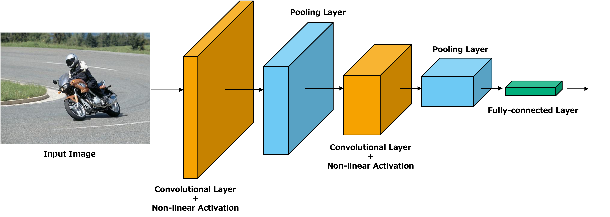
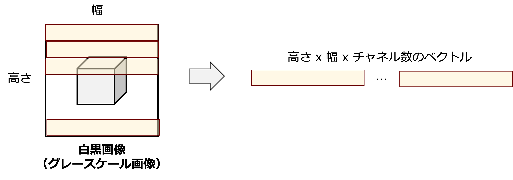
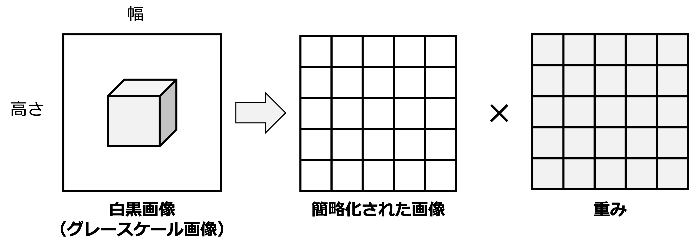
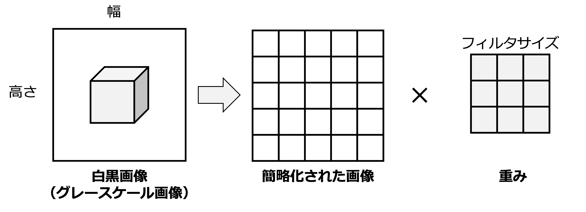
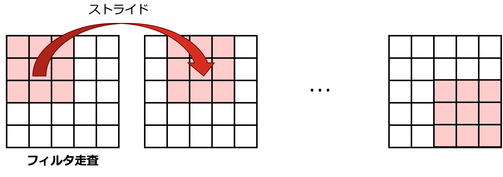
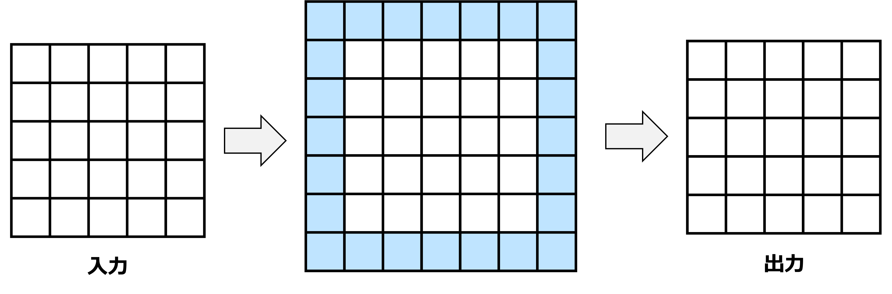
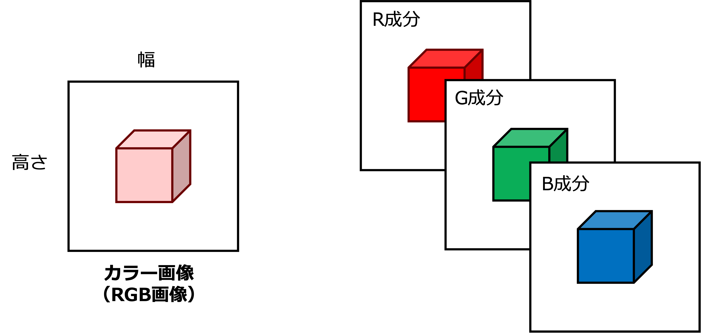
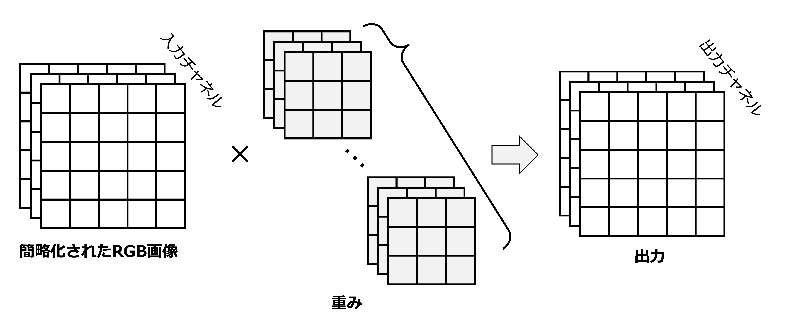

畳み込み層

畳み込みニューラルネットワーク（Convolutional Neural Network, CNN） は人間の視覚野から着想を得てモデル化されたニューラルネットワークであり，主に画像分野で利用されるニューラルネットワークの一種である．上図に示すように，CNNは畳み込み層とPooling層と呼ばれる層から構成され，MLPとは異なり，画像の特性を考慮した変換ができる能力を持っている．ここでは，まず畳み込み層について詳しく見ていく．
二次元画像と線形層
高さが \(H\) で幅が \(W\) の二次元の画像
\[\begin{split}
\boldsymbol{X} = \begin{bmatrix}
x_{1,1} & x_{1,2} & \cdots & x_{1, W} \\
x_{2,1} & x_{2,2} & \cdots & x_{2, W} \\
\vdots & \vdots & \ddots & \vdots \\
x_{H,1} & x_{H,2} & \cdots & x_{H, W}
\end{bmatrix} \in \mathbb{R}^{H \times W}
\end{split}\]
を入力として与えられることを考える．入力するモデルがMLPの場合，線形層の行列計算からも明らかであるように，ベクトル化して入力する必要がある．画像のベクトル化を，平坦化操作（Flatten） といい，これは入力画像 \(\boldsymbol{X}\) の各画素 \(x_{i, j}\) を順番に並べる操作である．イメージ図は

であり，この処理を定式化すると以下である．
\[
\boldsymbol{x} = \mathrm{Flatten}(\boldsymbol{X}) = \begin{bmatrix} x_{1,1} & x_{1,2} & \cdots & x_{1, W} & x_{2,1} & x_{2,2} & \cdots & x_{H, W} \end{bmatrix}^\top \in \mathbb{R}^{H \cdot W}
\]
やや強引であるが画像をベクトルに変換できたので \(D_{in} = H \cdot W\) の入力次元を持つ線形層に入力できる．このときの線形層の出力次元を \(D_{out} = H \cdot W\) としたとき，つまり，入出力が同じになるようにしたとき，その線形層の計算は次のようになる．
\[
\begin{align}
\boldsymbol{h} = \boldsymbol{x} \boldsymbol{W}^\top + \boldsymbol{b}=\begin{bmatrix} h_{1,1} & h_{1,2} & \cdots & h_{1, W} & h_{2,1} & h_{2,2} & \cdots & h_{H, W} \end{bmatrix}^\top \in \mathbb{R}^{H \cdot W}
\end{align}
\]
ここで，\(\boldsymbol{h}\) は出力次元 \(D_{out}\) を持つベクトルであり，\(\boldsymbol{W} \in \mathbb{R}^{D_{out} \times D_{in}}\) は重み行列，\(\boldsymbol{b} \in \mathbb{R}^{D_{out}}\) はバイアス項である．また幅と高さがわかっていれば順番は揃っているのでFlattenして計算されたベクトル \(\boldsymbol{h}\) を再び画像の形式 \(\boldsymbol{H}\) に戻すこともできる．
\[\begin{split}
\boldsymbol{H} = \mathrm{UnFlatten}(\boldsymbol{h}) = \begin{bmatrix}
h_{1,1} & h_{1,2} & \cdots & h_{1, W} \\
h_{2,1} & h_{2,2} & \cdots & h_{2, W} \\
\vdots & \vdots & \ddots & \vdots \\
h_{H,1} & h_{H,2} & \cdots & h_{H, W}
\end{bmatrix} \in \mathbb{R}^{H \times W}
\end{split}\]
では，この線形層の計算を空間的な配置を保ったまま定式化してみよう．つまり，Flatten操作をせずに，\(\boldsymbol{X}\) から隠れ層の表現 \(\boldsymbol{H}\) を計算する．図にすると以下である．

ここで，\(\boldsymbol{X}_{i,j}\) と \(\boldsymbol{H}_{i,j}\) を位置 \((i,j)\) における入力画像と隠れ層の表現の値とする．\(\boldsymbol{H}_{i,j}\) の値を計算するために，位置 \((i,j)\) に対応する同じサイズを持つ重み行列 \(\boldsymbol{W}^{(i,j)} \in \mathbb{R}^{H \times W}\) を使って要素ごとの積をとり，同じく位置 \((i,j)\) に対応するバイアス値 \(b_{i,j}\) を足し合わせれば良い．つまり，
\[
\boldsymbol{H}_{i,j} = \sum_{k=1}^{H} \sum_{l=1}^{W} \boldsymbol{W}^{(i,j)}_{k,l} \cdot \boldsymbol{X}_{k,l} + b_{i,j}
\]
となる．表記を簡略化するために，重み行列を4階のテンソル（多次元配列 array[i][j][k][l] のようなもの）で表記すると，
\[
\boldsymbol{H}_{i,j} = \sum_{k=1}^{H} \sum_{l=1}^{W} \boldsymbol{W}_{i,j,k,l} \cdot \boldsymbol{X}_{k,l} + b_{i,j}
\]
と綺麗に書ける．この式は線形層を画像形式で書き換えたので \(k,l\) の走査範囲が画像全体に渡っている．畳み込み層ではこの走査範囲をある位置から少し離れた領域に対してのみ適用する 重みの局所性 と位置に依存しない重みを持つ 重みの共有化 を備えた演算を行う．
具体例
畳み込みの局所性の前に，上記の式の具体例を確認する．高さ \(H=3\)，幅 \(W=3\) の二次元画像を考え，位置 \((i,j)=(2,2)\) の場合の数式を書き出す．このとき，入力画像は
\[\begin{split}
\boldsymbol{X} = \begin{bmatrix}
x_{1,1} & x_{1,2} & x_{1,3} \\
x_{2,1} & x_{2,2} & x_{2,3} \\
x_{3,1} & x_{3,2} & x_{3,3}
\end{bmatrix}
\end{split}\]
となる．また，位置 \((i,j)=(2,2)\) に対応する重みは次のように書ける．
\[\begin{split}
\boldsymbol{W} = \begin{bmatrix}
w_{2,2,1,1} & w_{2,2,1,2} & w_{2,2,1,3} \\
w_{2,2,2,1} & w_{2,2,2,2} & w_{2,2,2,3} \\
w_{2,2,3,1} & w_{2,2,3,2} & w_{2,2,3,3}
\end{bmatrix}
\end{split}\]
このとき，バイアス値はスカラーなので \(b_{2,2}\) である．位置 \((2,2)\) における隠れ層の出力 \(\boldsymbol{H}_{2,2}\) は，入力画像 \(\boldsymbol{X}\) の各画素と重み行列 \(\boldsymbol{W}\) の要素の積を計算し，それらをすべて足し合わせた後にバイアス \(b_{2,2}\) を加えるという計算なので，具体的に次のように書ける．
\[\begin{split}
\begin{aligned}
\boldsymbol{H}_{2,2} &= \sum_{k=1}^{3} \sum_{l=1}^{3} \boldsymbol{W}_{2,2,k,l} \cdot \boldsymbol{X}_{k,l} + b_{2,2} \\
&= w_{2,2,1,1} \cdot x_{1,1} + w_{2,2,1,2} \cdot x_{1,2} + w_{2,2,1,3} \cdot x_{1,3} \\
&\quad + w_{2,2,2,1} \cdot x_{2,1} + w_{2,2,2,2} \cdot x_{2,2} + w_{2,2,2,3} \cdot x_{2,3} \\
&\quad + w_{2,2,3,1} \cdot x_{3,1} + w_{2,2,3,2} \cdot x_{3,2} + w_{2,2,3,3} \cdot x_{3,3} + b_{2,2}
\end{aligned}
\end{split}\]
これを \(i=1,...,H\)，\(j=1,...,W\) まで \(\boldsymbol{H}\) の計算を行う．煩雑な計算をしているようだが，現段階の上記の演算は線形層で行なっている演算と同じである．これは次のようにFlattenして考えるとわかる．
\[
\mathrm{Flatten}(\boldsymbol{X}) = \boldsymbol{x} = \begin{bmatrix} x_{1,1} & x_{1,2} & x_{1,3} & x_{2,1} & x_{2,2} & x_{2,3} & x_{3,1} & x_{3,2} & x_{3,3} \end{bmatrix}^\top \in \mathbb{R}^{9}
\]
\[
\mathrm{Flatten}(\boldsymbol{W}) = \boldsymbol{w}_{2,2} = \begin{bmatrix} w_{2,2,1,1} & w_{2,2,1,2} & w_{2,2,1,3} & w_{2,2,2,1} & w_{2,2,2,2} & w_{2,2,2,3} & w_{2,2,3,1} & w_{2,2,3,2} & w_{2,2,3,3} \end{bmatrix}^\top \in \mathbb{R}^{9}
\]
これは行列の一つの行と列の計算式と同じなので，
\[\begin{split}
\begin{align}
\boldsymbol{H}_{2,2} &=\boldsymbol{w}_{2,2} \cdot \boldsymbol{x} + b_{2,2} \\
&= w_{2,2,1,1} \cdot x_{1,1} + w_{2,2,1,2} \cdot x_{1,2} + w_{2,2,1,3} \cdot x_{1,3} \\
&\quad + w_{2,2,2,1} \cdot x_{2,1} + w_{2,2,2,2} \cdot x_{2,2} + w_{2,2,2,3} \cdot x_{2,3} \\
&\quad + w_{2,2,3,1} \cdot x_{3,1} + w_{2,2,3,2} \cdot x_{3,2} + w_{2,2,3,3} \cdot x_{3,3} + b_{2,2}
\end{align}
\end{split}\]
として，これまでの線形層の計算と同じであることがわかる．
重みの局所性

重みの局所性を説明するために，前述の2次元画像の線形層の数式における走査変数 \(k,l\) を位置 \((i,j)\) を始点とした範囲に変更する．つまり
\[
k = i + a, \quad l = j + b
\]
とする．補足しておくと，\(k,l\) の開始は位置 \((1,1)\) であった．画像でいうと左上である．上記の表記とすることで，開始位置 \((i,j)\) 基準として重みを定義できる．これを使うと
\[
\boldsymbol{H}_{i,j} = \sum_{a} \sum_{b} \boldsymbol{W}_{i,j,i+a,j+b} \cdot \boldsymbol{X}_{i+a,j+b} + b_{i,j}
\]
と書ける．ここで，\(a\) と \(b\) を画像サイズよりも小さい値を設定して考える．これにより，位置 \((i, j)\) における隠れ層の表現 \(\boldsymbol{H}_{i,j}\) は，周辺の画素にのみ依存するようになる．また画像中の隣接した画素は相関があることから，画像的な特性も考慮していると言える．これは 重みの局所性 と呼ばれる性質である．
具体例
例えば，\(a=-1,0,1\) と \(b=-1,0,1\) で考える．そのように設定すると，画像中の一部の領域，つまり位置 \((i, j)\) を中心とした \(3 \times 3\) の局所領域だけに対して重みが適用される．数式で書くと，
\[
\boldsymbol{H}_{i,j} = \sum_{a=-1}^{1} \sum_{b=-1}^{1} \boldsymbol{W}_{i,j,2+a,2+b} \cdot \boldsymbol{X}_{2+a,2+b} + b_{i,j}
\]
であり，これを展開すると，
\[\begin{split}
\begin{align}
\boldsymbol{H}_{i,j} &= w_{i,j,1,1} \cdot x_{1,1} + w_{i,j,1,2} \cdot x_{1,2} + w_{i,j,1,3} \cdot x_{1,3} \\
&\quad + w_{i,j,2,1} \cdot x_{2,1} + w_{i,j,2,2} \cdot x_{2,2} + w_{i,j,2,3} \cdot x_{2,3} \\
&\quad + w_{i,j,3,1} \cdot x_{3,1} + w_{i,j,3,2} \cdot x_{3,2} + w_{i,j,3,3} \cdot x_{3,3} + b_{i,j}
\end{align}
\end{split}\]
となり，局所的な演算ができていることが確認できる．
重みの共有化

ここまでの重み \(\boldsymbol{W}_{i,j,i+a,j+b}\) は位置に依存している．つまり，位置 \((1,1)\) と \((10,10)\) では，それぞれ， \(\boldsymbol{W}_{1,1,1+a,1+b}\) と \(\boldsymbol{W}_{10,10,10+a,10+b}\) という異なる重みを持っている．重みの共有化 とは位置に依存しない重み，つまり，
\[
\boldsymbol{W}_{i,j,i+a,j+b} = \boldsymbol{W}_{i+a,j+b}
\]
として重みを設計することを意味する．また現状，\(b_{i,j}\) なのでバイアスも位置に依存している．これも位置に依存しないように，
\[
b_{i,j} = b
\]
として設計する．このようにすると，
\[
\boldsymbol{H}_{i,j} = \sum_{a} \sum_{b} \boldsymbol{W}_{i+a,j+b} \cdot \boldsymbol{X}_{i+a,j+b} + b
\]
となり，どの位置で計算しても同じ重みとバイアスが使われるようになる．このような重み共有化はパラメータ数の削減と 位置不変性 をCNNにもたらす．位置不変性とは，入力に含まれる物体が並行移動したとしても，出力が変わらないような性質である．
CNNにおける畳み込みの重要な性質は重みの局所性と共有化である．一般的なCNNではこれらの性質に加えて，ストライドと後述するマルチチャネル化がサポートされている．ここでは，ストライドについて紹介する．ストライド（stride） は重みをずらす量を定義する．上式では，\(a,b\) が1ずつ動いているが，ストライド付きの畳み込みでは \(s\) ずつ移動しながら重みを適用することを考える．式で書くと，
\[
\boldsymbol{H}_{i,j} = \sum_{a} \sum_{b} \boldsymbol{W}_{i+a,j+b} \cdot \boldsymbol{X}_{i \cdot s+a,j \cdot s+b} + b
\]
となる．\(\boldsymbol{X}\) 上の \((i,j)\) が \(s=3\) としたとき \((0,0) \rightarrow (3,3) \rightarrow (6,6) \cdots\) と移動していることもわかるように，\(s\) 飛ばしで \(\boldsymbol{X}\) の値を参照している．ストライドを調整することで，計算回数を減らしたり，出力のサイズを調整することができる．
視覚的な理解
ここまでの畳み込みの式を視覚的に理解する．\((H,W)=(5,5)\)の入力と共有化がなされた\((a,b)=(3,3)\)の重みを考える．
\[\begin{split}
\boldsymbol{X} = \begin{bmatrix}
x_{1,1} & x_{1,2} & x_{1,3} & x_{1,4} & x_{1,5} \\
x_{2,1} & x_{2,2} & x_{2,3} & x_{2,4} & x_{2,5} \\
x_{3,1} & x_{3,2} & x_{3,3} & x_{3,4} & x_{3,5} \\
x_{4,1} & x_{4,2} & x_{4,3} & x_{4,4} & x_{4,5} \\
x_{5,1} & x_{5,2} & x_{5,3} & x_{5,4} & x_{5,5}
\end{bmatrix},
\boldsymbol{W} = \begin{bmatrix}
w_{1,1} & w_{1,2} & w_{1,3} \\
w_{2,1} & w_{2,2} & w_{2,3} \\
w_{3,1} & w_{3,2} & w_{3,3}
\end{bmatrix}
\end{split}\]
\(s=1\)，バイアスを無視して，\(\boldsymbol{H}\) は次の畳み込み演算 \(\boldsymbol{X}*\boldsymbol{W}\) となる．
\[\begin{split}
\boldsymbol{X} * \boldsymbol{W}= \begin{bmatrix}
\textcolor{#0099ff}{x_{1,1}} & \textcolor{#0099ff}{x_{1,2}} & \textcolor{#0099ff}{x_{1,3}} & x_{1,4} & x_{1,5} \\
\textcolor{#0099ff}{x_{2,1}} & \textcolor{#0099ff}{x_{2,2}} & \textcolor{#0099ff}{x_{2,3}} & x_{2,4} & x_{2,5} \\
\textcolor{#0099ff}{x_{3,1}} & \textcolor{#0099ff}{x_{3,2}} & \textcolor{#0099ff}{x_{3,3}} & x_{3,4} & x_{3,5} \\
x_{4,1} & x_{4,2} & x_{4,3} & x_{4,4} & x_{4,5} \\
x_{5,1} & x_{5,2} & x_{5,3} & x_{5,4} & x_{5,5}
\end{bmatrix} * \begin{bmatrix}
\textcolor{#0099ff}{w_{1,1}} & \textcolor{#0099ff}{w_{1,2}} & \textcolor{#0099ff}{w_{1,3}} \\
\textcolor{#0099ff}{w_{2,1}} & \textcolor{#0099ff}{w_{2,2}} & \textcolor{#0099ff}{w_{2,3}} \\
\textcolor{#0099ff}{w_{3,1}} & \textcolor{#0099ff}{w_{3,2}} & \textcolor{#0099ff}{w_{3,3}}
\end{bmatrix}
= \begin{bmatrix}
\textcolor{#0099ff}{h_{1,1}} & h_{1,2} & h_{1,3} \\
h_{2,1} & h_{2,2} & h_{2,3} \\
h_{3,1} & h_{3,2} & h_{3,3}
\end{bmatrix}
\end{split}\]
青色が実際に行われる計算であり，入力の一部に対してのみ重みが適用されること（重みの局所性）と共通した重みが適用されること（重みの共有化）が確認できるかと思う．この入力上の青色の領域はストライドの大きさで移動量が変わってくる．
そして，要素単位の計算と内積の形で書けることも紹介した．結果的に，畳み込みは入力に含まれるパターンと重みが表すパターンの内積を計算していることに他ならない．つまり，入力と重みのパターンの類似度を計算していることになる．
パディング

上記の例のように重みのサイズやストライド数によっては入出力の解像度が低下することがある．パディング（Padding） は入出力の解像度を揃えるために，入力画像の縁に0などの特定の値を埋めて解像度を上げるテクニックである．上記の例を使って，0で値を埋めるゼロパディングを視覚的に説明する．
\((5,5)\) の入力 \(\boldsymbol{X}\) と \((3,3)\) の重み \(\boldsymbol{W}\) を考える．ここにパディング \(p = 1\) を加えると，入力は次のように拡張される．
\[\begin{split}
\boldsymbol{X}' = \begin{bmatrix}
0 & 0 & 0 & 0 & 0 & 0 & 0 \\
0 & x_{1,1} & x_{1,2} & x_{1,3} & x_{1,4} & x_{1,5} & 0 \\
0 & x_{2,1} & x_{2,2} & x_{2,3} & x_{2,4} & x_{2,5} & 0 \\
0 & x_{3,1} & x_{3,2} & x_{3,3} & x_{3,4} & x_{3,5} & 0 \\
0 & x_{4,1} & x_{4,2} & x_{4,3} & x_{4,4} & x_{4,5} & 0 \\
0 & x_{5,1} & x_{5,2} & x_{5,3} & x_{5,4} & x_{5,5} & 0 \\
0 & 0 & 0 & 0 & 0 & 0 & 0
\end{bmatrix}
\end{split}\]
この拡張された入力に畳み込み層を適用することで，入出力の解像度が揃う．\(s=1\)のとき，重みが\(3\times 3\)には\(p=1\)，\(5\times 5\)には\(p=2\)と覚えておくと良い．
マルチチャネル化
ここまで，説明の簡略化のために，チャネルの概念を無視してきた．以下の図に示すように，一般的にカラー画像の場合，RGBの3チャネルの成分から画像が構成される．

つまり，入力は \(C=3\) 枚の \(H \times W\) の行列
\[\begin{split}
\boldsymbol{X} = \begin{bmatrix}
\boldsymbol{X}^{(1)} \\
\boldsymbol{X}^{(2)} \\
\vdots \\
\boldsymbol{X}^{(C)}
\end{bmatrix} \in \mathbb{R}^{C \times H \times W}
\end{split}\]
として表現される．ここで，\(\boldsymbol{X}^{(c)} \in \mathbb{R}^{H \times W}\) はチャンネル \(c\) における \(H \times W\) の行列であり，
\[\begin{split}
\boldsymbol{X}^{(c)} = \begin{bmatrix}
x_{1,1}^{(c)} & x_{1,2}^{(c)} & \cdots & x_{1, W}^{(c)} \\
x_{2,1}^{(c)} & x_{2,2}^{(c)} & \cdots & x_{2, W}^{(c)} \\
\vdots & \vdots & \ddots & \vdots \\
x_{H,1}^{(c)} & x_{H,2}^{(c)} & \cdots & x_{H, W}^{(c)}
\end{bmatrix}
\end{split}\]
である．このような \(c\) チャネルを持つ入力 \(\boldsymbol{X}\) に対して，\(d\) チャネル持つ隠れ層の表現に変換する畳み込み演算は，
\[
\boldsymbol{H}_{i,j,d} = \sum_{a} \sum_{b} \sum_{c} \boldsymbol{W}_{i+a,j+b,c,d} \cdot \boldsymbol{X}_{i+a,j+b,c} + b_{c,d}
\]
と書ける．ここで，\(\boldsymbol{W}\) は入出力のチャネルごとに異なる値を持つ4階のテンソルである．このように表現することで，例えば，あるチャネルでは物体Aを，別のチャネルでは物体Bをというように重みの役割を分散させることができる．これを図にすると以下である．

これが，上記の式が最終的な畳み込み層における演算である．
PyTorchにおける畳み込み
PyTorchでは以下のように畳み込み層を定義する．
torch.nn.Conv2d(in_channels, out_channels, kernel_size, stride=1, padding=0, bias=True)
ここで，
in_channels: 入力のチャネル数 \(c\)
out_channels: 出力のチャネル数 \(d\)
kernel_size: 重みのサイズ \(a,b\)
stride: ストライド \(s\)
padding: パディング \(p\)
bias: バイアス項の有無
である．
ここでは，説明予定のない引数は省略している点に注意されたい．利用する際は，リファレンスページを確認されたい．
x.shape: torch.Size([10, 3, 10, 10])
h.shape: torch.Size([10, 32, 10, 10])
重みやバイアスには次のようにアクセスできる．
weight.shape: torch.Size([32, 3, 3, 3])
bias.shape: torch.Size([32])
信号処理における畳み込みとの違い
畳み込み（Convolution） とは，信号を処理するための基本的な演算であり，入力信号にカーネルと呼ばれるフィルタを適用することで，入力信号の特定の特徴を抽出したり、平滑化やエッジ検出などの処理を実現できる．
連続信号における畳み込みは，変数 \(z\) に関する2つの関数 \(f(x)\) と \(g(x)\) の畳み込み \((f * g)(x)\) は
\[
(f * g)(x) = \int_{-\infty}^{\infty} f(z) \cdot g(x - z) dz
\]
として定義される．この式は，積分の中で見ると，関数 \(g(z)\) を反転させ，さらに \(x\) だけシフトした状態で \(f(z)\) との積を積分する操作を意味している．
一方で，離散的な信号 \(f[n]\) と \(g[n]\) に対する畳み込み \((f * g)[n]\) は次のように定義されていた．
\[
(f * g)[n] = \sum_{k=-\infty}^{\infty} f[k] \cdot g[n - k]
\]
この式も総和の中で見ると，\(g[k]\) を反転およびシフトして \(f[k]\) との積の総和を求める操作を意味している．連続・離散信号ともに反転させた信号に対して積和計算を行うものが信号処理における畳み込みである．しかしながら，前述したように，CNNにおける畳み込み層は反転せずに積和計算をしている．これは 相互相関関数（Cross Correlation） と呼ばれる処理である．
\[
(f * g)(x) = \int_{-\infty}^{\infty} f(z) \cdot g(z + x) dz
\]
\[
(f * g)[n] = \sum_{k=-\infty}^{\infty} f[k] \cdot g[k + n]
\]
また関数 \(g\) が点対称であれば同一の演算であるが，厳密には異なることに注意されたい．
{kind=link}
{kind=link}
{kind=link}
{kind=link}
{kind=link}
{kind=link}
{kind=link}
{kind=link}